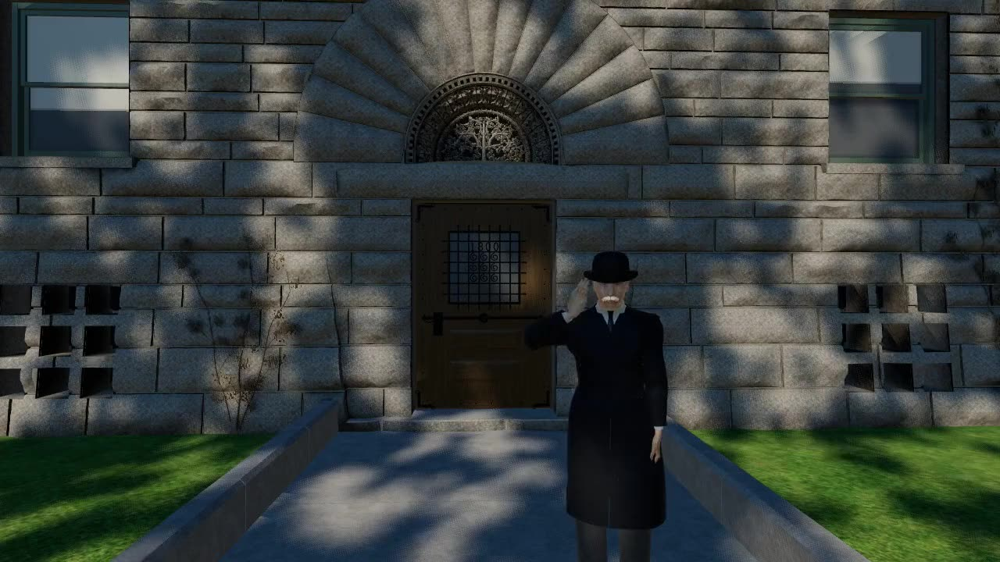
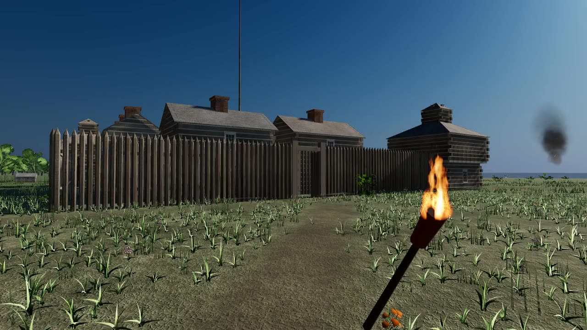
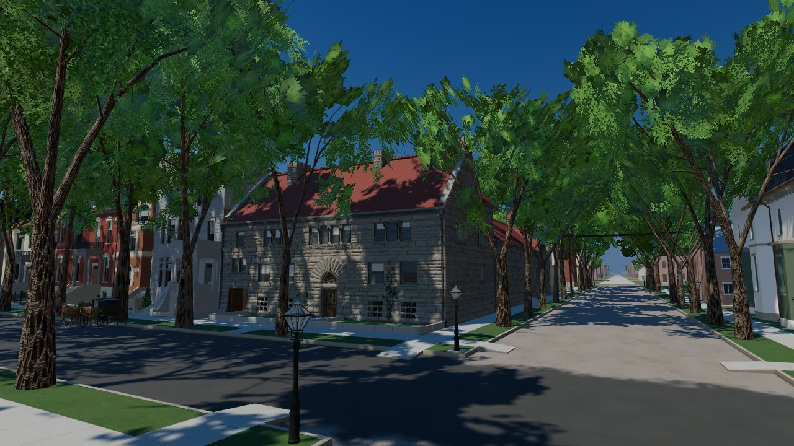
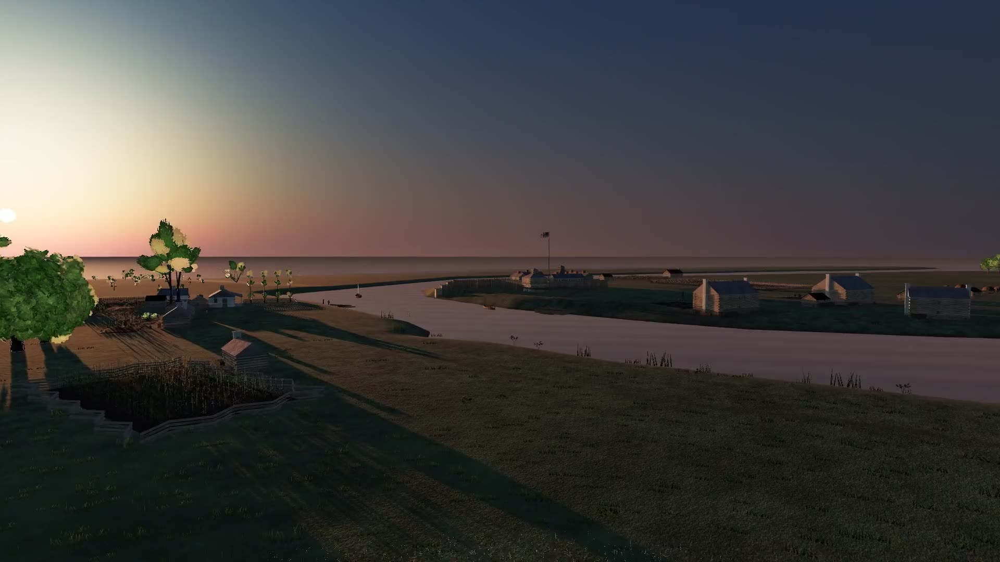
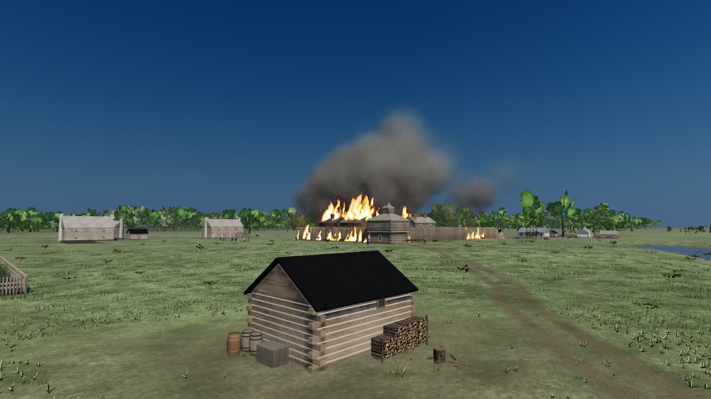
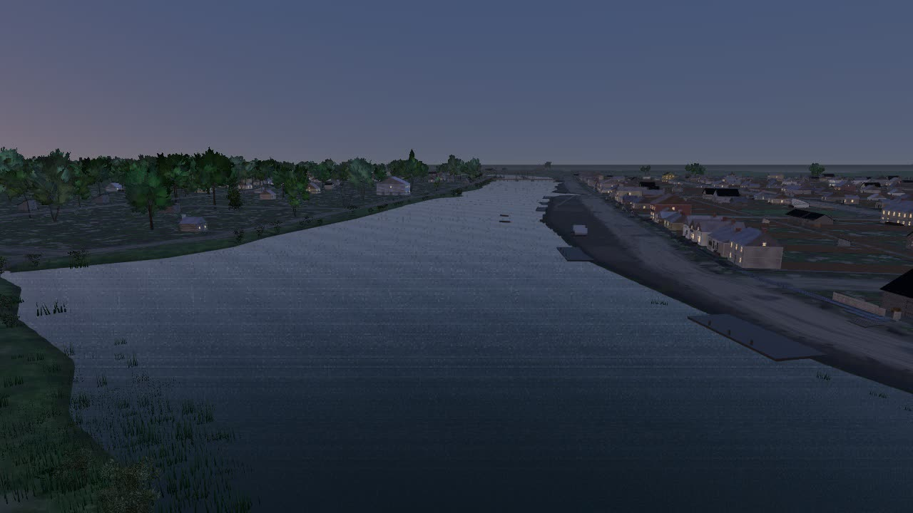
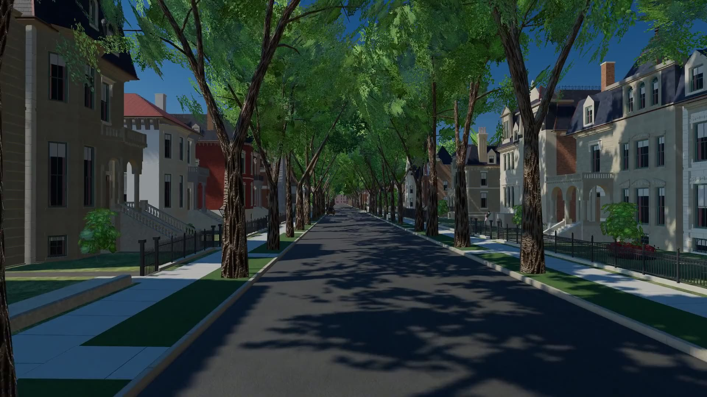

Walk into Chicago's past.
Four moments in the city's life, rebuilt from maps, censuses, photographs and newspapers: Fort Dearborn in 1812, the river town of 1835, the wooden city on the eve of the Great Fire in 1871, and Prairie Avenue in 1904. Walk the streets, talk with the people who lived there, and open the record behind every wall.

1904 · 1800 Prairie AvenueA town full of people you can talk to.
The people in 4D Chicago are the people the records name: the soldiers, traders and Potawatomi families of Fort Dearborn, the shopkeepers and boarders of the 1835 town, the Glessners and Pullmans and the cooks, maids and coachmen who worked for them. Walk up to anyone. They stop and turn to you, and their card tells you who they are and how we know.
- GreetAnyone in the street stops, turns and answers.
- Tell me a storyEveryone has stories: their own first, then the town's.
- Ask a questionAsk about their work, their family or the news of the day.
- KnockAsk at a door for someone who lives there, and they come out to you.
- FollowWalk with them to work, to the store and home again.
Play it, teach it, check it, build on it.
Pages for players, educators, historians and technicians, each written for what they come to do.

Play it
Story jaunts where your choices count, mysteries to solve, teams to drive and two fires to live through.
- Jaunts staged with the people who were there
- Drive a carriage, ride, row, take a helm
- Watch Fort Dearborn and the city burn

Teach with it
Every jaunt at four reading levels, read aloud, in English or Spanish, with questions at the end.
- Pick ages 8 to 17 in Settings
- Narrated stops, a Spanish setting
- Build a class route and share one link

Check it
Photographs matched camera to camera, households read from the census, and every guess written down.
- Archive photo and model, side by side
- Census, Blue Book and newspaper research
- Three grades of certainty on every fact

Build with it
How records become a city in the browser: the data, the generators, the asset library and the renderer.
- Records, sources and schemas
- The architectural component library
- Open source code and a live API
Pick a year. See it standing.
1812, Fort Dearborn. The fort at the mouth of the river on the eve of the battle: the garrison, the Kinzie household, the Potawatomi camps along the river. Watch the column march out on 15 August, and the empty fort burn the next morning.
Dive into 1812
1812 · the river mouth 15 Aug · the column
15 Aug · the column
16 Aug · the burning1835, The river town. The boom town at the forks of the river: taverns, wharves and stores, schooners in from the lake, wagons on Lake Street, and the whole town coming and going from its homes and shops.
Dive into 1835 Lake St
Lake St
Dusk on the river1871, Before the Fire. Sunday, 8 October 1871: a city of wood with a stone downtown, the evening before the fire. Then the Great Fire itself, hour by hour, from the O'Leary barn to the North Side.
Dive into 1871 9 Oct 1871 · the fire
9 Oct 1871 · the fire1904, Prairie Avenue. Prairie Avenue in the summer of 1904: the Glessners, the Pullmans and the Fields, the cooks, maids and coachmen who worked for them, carriages under the elms, and the monument at Eighteenth Street.
Dive into 1904
1904 · Prairie Avenue A brougham
A broughamChoose a year. Step through.
4D Chicago runs in your browser: no install, on a computer, a phone or a VR headset. Sign in once and every year is open.
Opens the Temporal Observatory · pick a destination · W A S D to walk, or the thumb stick on a phone